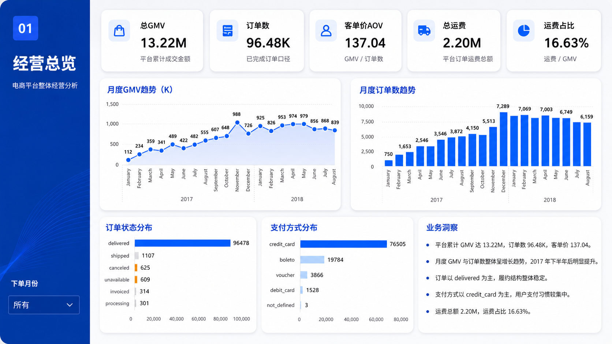
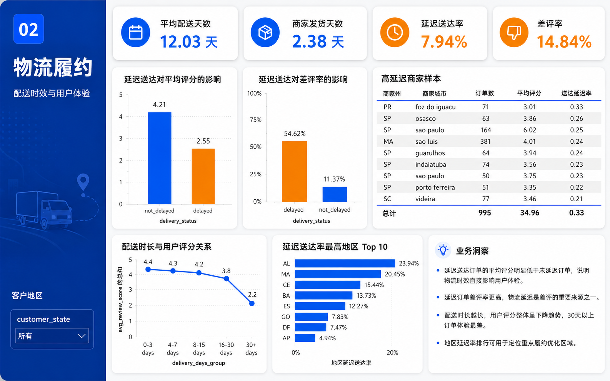
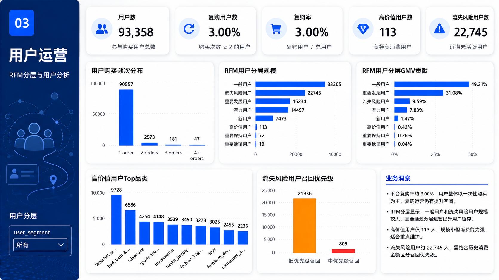
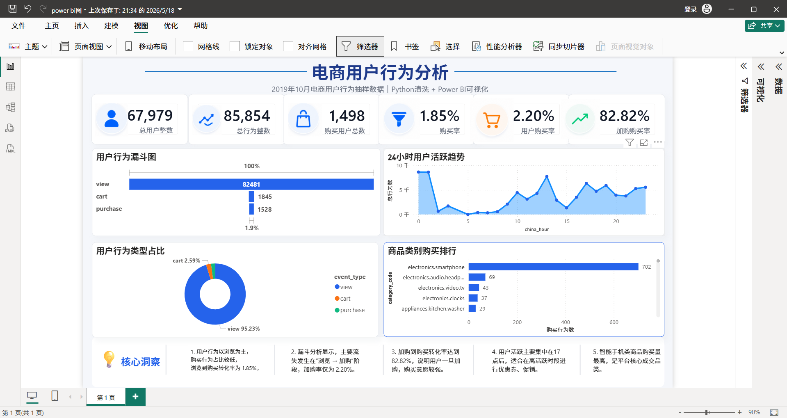

罗方宇｜数据分析作品集
求职方向：数据分析实习生 / 业务分析实习生 / 数据运营实习生
关键词：Excel、SQL、MySQL、Power BI、Python、Pandas、数据清洗、指标分析、业务复盘
SQL 提数与指标计算
Excel 数据校验
Power BI 看板
Python 数据清洗
业务分析报告
核心项目预览：电商经营分析看板

项目结果：
基于 MySQL / Excel / Power BI 完成电商经营分析，构建 16 张 ADS 指标表、3 页 Power BI 看板，
输出 GMV、订单数、AOV、延迟送达率、差评率、复购率、RFM 用户分层等核心指标。
项目一：基于 SQL 的电商平台经营分析项目
基于 Kaggle Olist 多表电商数据，使用 MySQL / Navicat / Excel / Power BI 完成数据清洗、指标建设、
经营分析看板搭建和业务结论输出，模拟企业数据分析岗位中的提数、建模、报表和复盘流程。
16 张 ADS 指标表
3 页 Power BI 看板
5 份 SQL 脚本
Power BI 看板展示
经营总览页
物流履约页

用户运营页

核心指标
GMV、订单数、AOV、运费占比、延迟送达率、差评率、复购率、RFM 用户分层、
支付方式占比、地区分布、品类销售排行、商家销售排行。
核心分析结论
- 平台复购率约 3%，用户以一次性购买为主，存在用户留存和复购提升空间。
- 延迟送达订单评分更低、差评率更高，物流履约体验对用户评价有明显影响。
- 不同品类和地区的销售贡献差异明显，可结合品类、地区和用户分层进行精细化运营。
项目链接：
查看 SQL 脚本与项目 README
项目二：基于 Python 的电商用户行为分析项目
基于电商用户行为数据，使用 Python / Pandas 完成数据读取、清洗、字段处理和行为转化统计，
并结合 Power BI 输出用户行为漏斗、活跃趋势和商品类别分析结果。

核心分析方向
- 用户行为转化漏斗：分析浏览、加购、收藏、购买等行为路径。
- 24 小时用户活跃趋势：识别用户活跃高峰时段，为运营活动时间选择提供参考。
- 商品类别购买排行：分析不同品类的购买表现和潜在运营机会。
- 结合用户行为转化情况，输出转化效率和运营优化建议。
项目链接：
查看 Python 清洗项目与 README
项目三：AI 数据分析自动化工作流
围绕数据分析项目从数据理解到看板交付的完整流程，搭建可复用的数据分析 SOP，
规范字段检查、SQL 建模、QA 校验和 BI 页面规划，提升数据分析项目的标准化程度。
项目产出
- 数据分析项目执行流程模板
- SQL 命名与保存规范
- ODS / DWD / ADS 分层建模流程
- QA 校验清单
- Power BI 页面规划模板
项目链接：
查看数据分析工作流项目